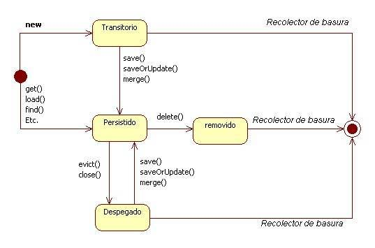

Los objetos que persistimos con Hibernate tienen un estado. Aparentemente no tiene mucho sentido ya que no hay ninguna propiedad estado en nuestras clases.Sin embargo el siguiente diagrama muestra los estados un objeto al respecto de Hibernate:

Fuente: Curso de Hibernate con Spring. Lorenzo González
Veamos ahora en qué consisten cada uno de los 4 estados:
Transitorio (Transient): Un objeto estará en estado Transitorio cuando acabe de ser creado en Java mediante el operador new. Es decir cuando esté recién creado por nosotros. Este estado tiene la característica de que hibernate no sabe nada de nuestro objeto. Quizás el objeto ya este guardado en base de datos o sea nuevo y tengamos que insertarlo.
Session.close() o llamamos al método Session.evict(Object objeto) para el objeto que queremos pasar a este estado. En ese caso Hibernate vuelve a olvidar en qué estado se encontraban los objetos borrándolo de su cache interna.